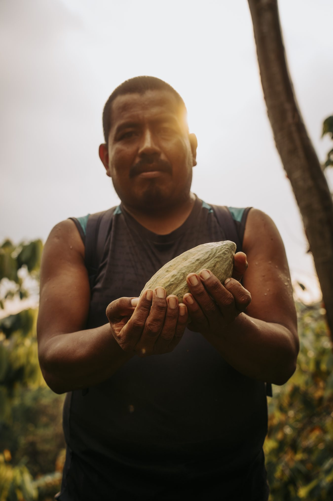
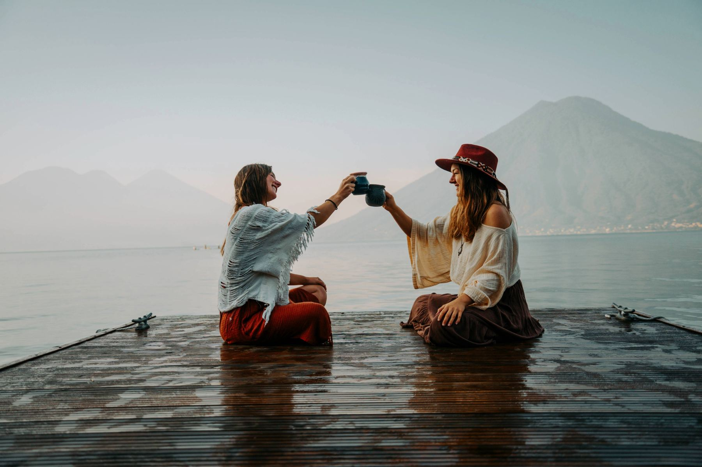
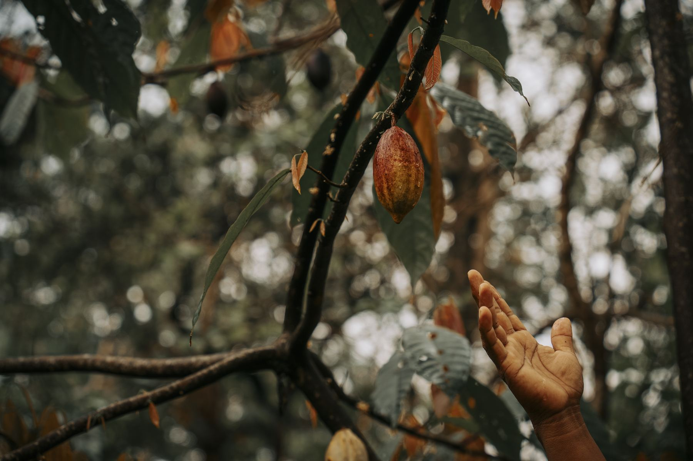

About Us
Welcome to Volcano Spirit Cacao
We are here to bring you the ancient tradition of ceremonial cacao, directly sourced from Mayan farmers in Guatemala.
Cacao Has a Story Most People Never Hear
Food of the gods, forgotten by the chocolate aisle.
Did you know that cacao has been known as "food of the gods" for centuries? Did you know that cacao in its original form is actually a superfood that can nourish your body and soul in ways no other food can?
The more we learned about cacao, the more we realized how disconnected the chocolate industry is from its origins. In Europe, cacao is often known as chocolate, sweetened and processed, full of artificial flavors and sugars, and sometimes doesn't even contain cacao anymore. The people who grow it, the forests it comes from, and the traditions that have carried it through generations are rarely part of the story.
That's why we work directly with small-scale farming communities in Guatemala who cultivate cacao with deep knowledge while stewarding the land. Our intention is to bring cacao back to its origins, honoring the process and the farmers, and sharing it in its pure form.

Meet Byron
The head and heart of our cacao collective.
Byron is the head and heart of our cacao collective, collaborating with five Mayan families around Lake Atitlán.
In these families, the wisdom of cultivating cacao has been passed down from generation to generation, and Byron continues his family tradition with so much passion and love.
We are beyond honored and grateful for him to share this wisdom with us.

Cacao Guardians
Hi, we are Anya and Laura.
We are the guardians behind Volcano Spirit Cacao. We're on a mission to share the heart-opening tradition of ceremonial cacao in a world where it's more needed than ever, and we're so happy you're part of it.
We met at the most magical place in the world: Lake Atitlán, where the tradition of cacao is alive and part of day-to-day life. We spent many years in the Mayan lands, sat in uncountable cacao ceremonies with local families, visited the farms where cacao is grown, and learned about the cultivation process directly from the farmers.
Cacao has opened our hearts in ways we never thought would be possible, and became our grounding ritual that we return to over and over again. That's why Volcano Spirit Cacao was born, to bring cacao back to its roots.

Origin
Born of fire, grown in living forest.
Lake Atitlán sits inside the collapsed crater of a volcano that erupted eighty-four thousand years ago, ringed by three younger volcanoes, Atitlán, Tolimán, San Pedro. Our groves grow beyond them, in the volcanic highlands behind these volcanoes rather than at the water's edge, where the soil is mineral-dense, iron-rich, still remembering the fire that made it.
Cacao has grown in this region since long before it had a border on a map. The Tz'utujil and Kaqchikel Maya who farm these highlands are not suppliers to us, they are the reason this cacao exists at all. We grow nothing here that they did not teach us.

The Craft
Heart over hurry.
Every pod is cut by hand, at the moment it's ready, not the moment a shipping schedule demands. The beans are fermented under banana leaves, sun-dried on open patios, then stone-ground into paste using the same technique used here for generations. Nothing is added. Nothing is taken away.
No alkalizing. No conching. No emulsifiers to make it melt like candy. What you get is exactly what came off the tree, full-fat, whole-bean, unmistakably alive.